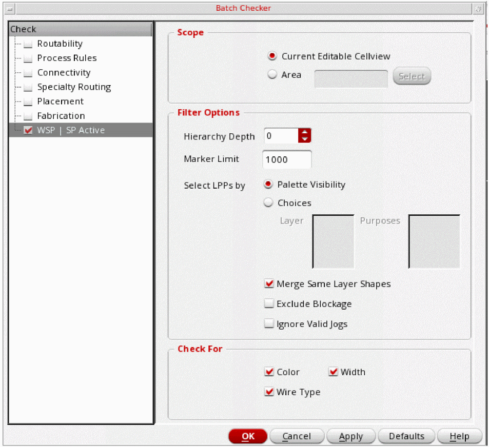
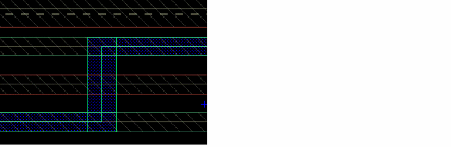

Checking WSP | SP Active Using Batch Checker
Checks shapes for width, color, and wireType conformance as compared to the active width spacing pattern (WSP). The active WSP can be for the global grid or a pattern region.
To check shapes for WSP conformance:
-
Choose WSP | SP Active in the Check panel.
The WSP | SP Active options are displayed on the right panel of the form, as shown in the following figure:
 - In the Scope group box, choose one of the following:
-
In the Filter Options group box, choose the following:
-
Hierarchy Depth
Choose the hierarchy depth up to which the cellview will be checked. -
Marker Limit
Specify the maximum number of violation markers. This is a cumulative count for all the layers and purposes to be checked, rather than per layer or purpose. If more than one layer or purpose is specified, the count can be reached before all those layers and purposes are checked. The default is 1000. For information on viewing and managing these markers, see Finding Violations Using Annotation Browser. -
Select LPPs by
Choose one of the following option to select LPPs.-
Palette Visibility
Checks for the LPPs that have the visibility option set totruein Palette. For example, IfMetal2andMetal3drawing LPPs are visible in the Palette and the other LPPs are invisible, WSP Active checks are performed onMetal2andMetal3layers only.
This is the default option. Layer and Purposes fields are disabled when Palette Visibility is selected. -
Choices
Enables you choose a single layer with multiple purposes for WASP active checking. -
Layer
Choose All or the layer for the shapes to be checked from the drop-down list of valid layers.
-
Palette Visibility
Layers withspdefandwsspdefare also displayed in the Layer field.
If only layer blockage object exists, the Purposes field is inactive.-
Merge Same Layer Shapes
Before checking, merges same-color shapes and uncolored shapes that are connected and on the same layer. If multiple purposes are selected, merging applies to the shapes on those purposes. -
Exclude Blockages
Before checking, exclude blockages if you do not want to include blockages while running the batch checker. -
Ignore Valid Jogs
Before checking, ignores jogs that are defined in theallowedWidthRangesconstraint for the layer in the jog direction. A job is a short connection between two tracks. Jogs are also referred to as non-preferred direction (NPD) pathSegs.
In the figure below, the vertical segment of layerM1is not on a WSP track. It is a jog.TheallowedWidthRangesconstraint for layerM1, is defined as follows:( allowedWidthRanges "M1" 'horizontal (0.048 0.062) 'ref "M1.W.1h" 'description "M1 width horz" )
( allowedWidthRanges "M1" vertical (0.032 0.048 ">= 0.062") 'ref "M1.W.1" 'description "M1 width" )
If the verticalM1pathseg or jog of width0.048or0.062is added to the design, it is ignored and no error marker is generated.
Environment variable: ignoreValidJogs
-
Hierarchy Depth
-
In the Check For group box, choose the following:
-
Color
Checks the shapes for conformance to the track colors of the active WSP. -
WireType
Checks the shapes for conformance to the wireTypes of the active WSP. -
Width
Checks the shapes for conformance to the track widths of the active WSP (if enabled), or the centerline alignment (if disabled) with the active WSP.
-
Color
Related Topics
Checking Routability Using Batch Checker
Checking Process Rules Using Batch Checker
Checking Connectivity Using Batch Checker
Checking Specialty Routing Using Batch Checker
Checking Fabrication Using Batch Checker
Return to top